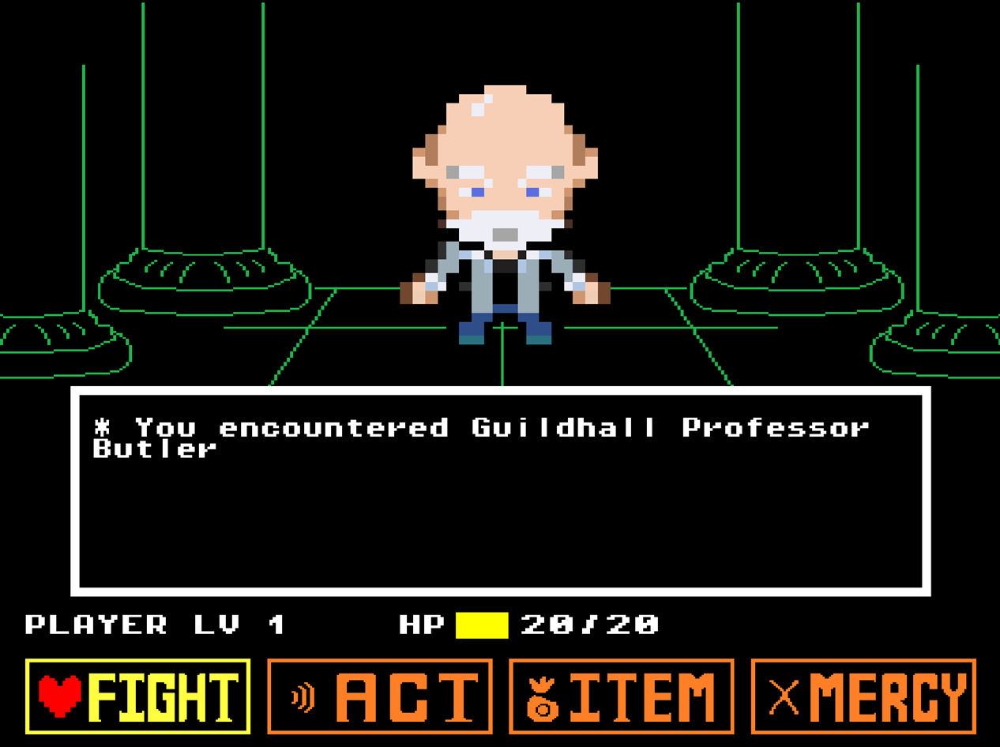

ButlerHell
ButlerHell was a project done at SMU Guildhall as a personal exploration into RPG systems and to play a joke on my professor. ButlerHell mimicks the battle style and HUD of Undertale in order to deliver a fun and humorous RPG bullet hell experience.
Link to Github Repo